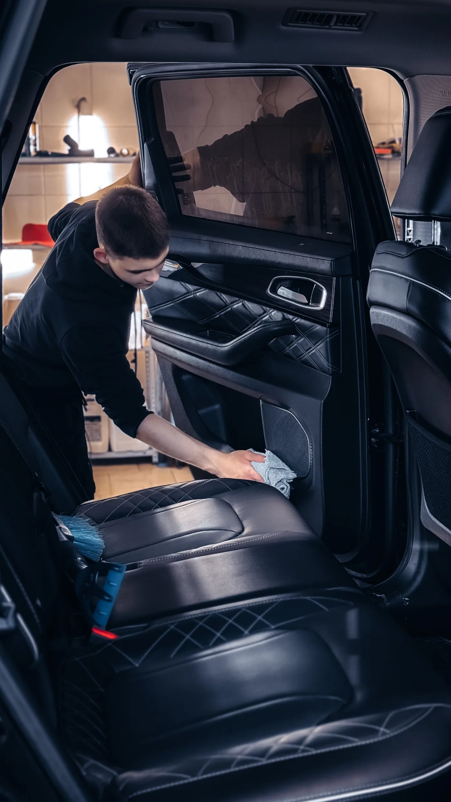
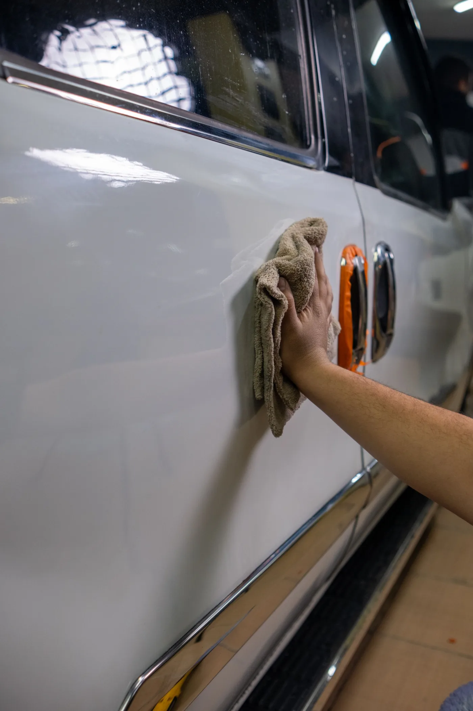
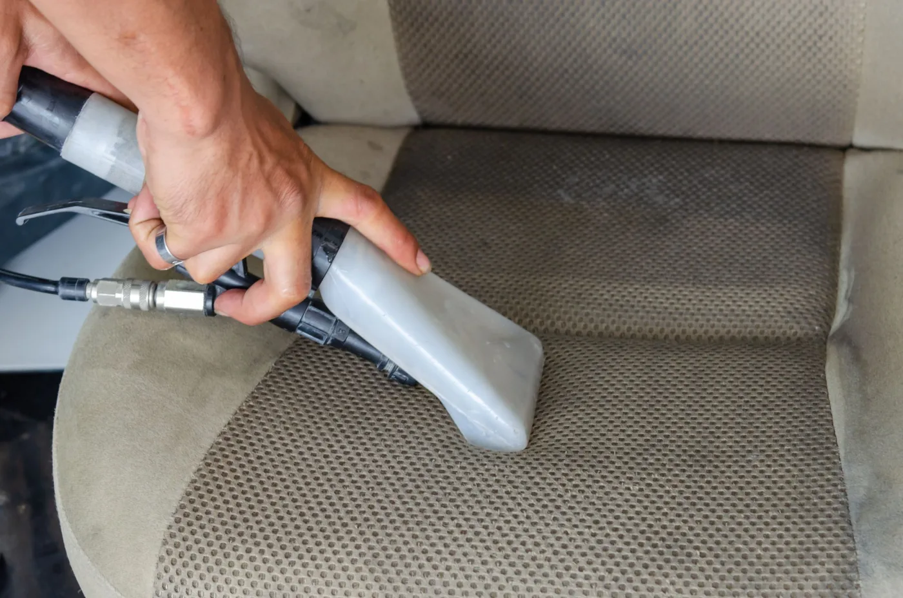
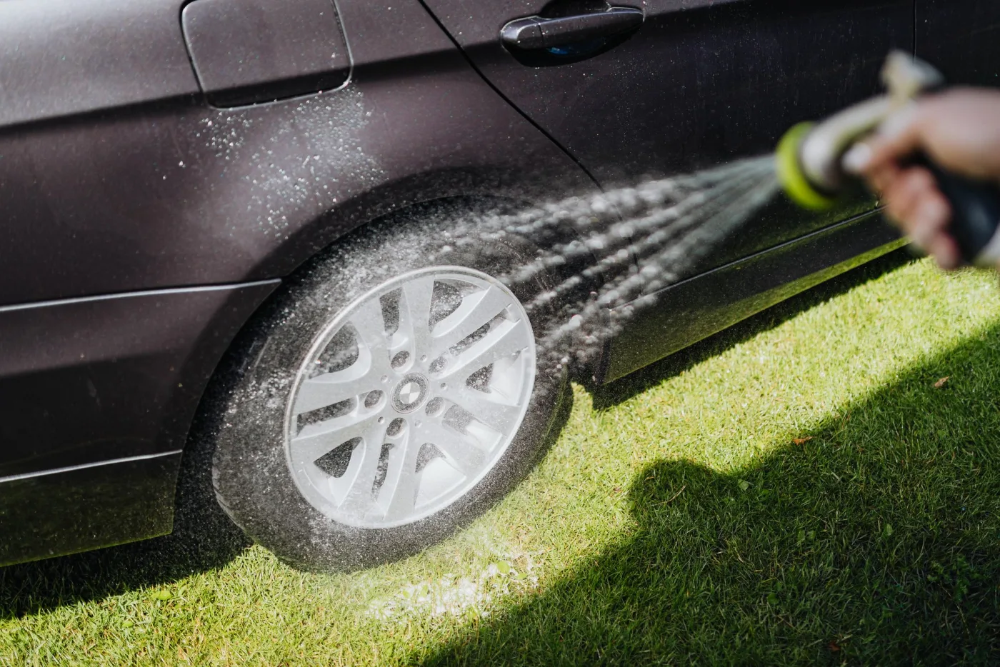
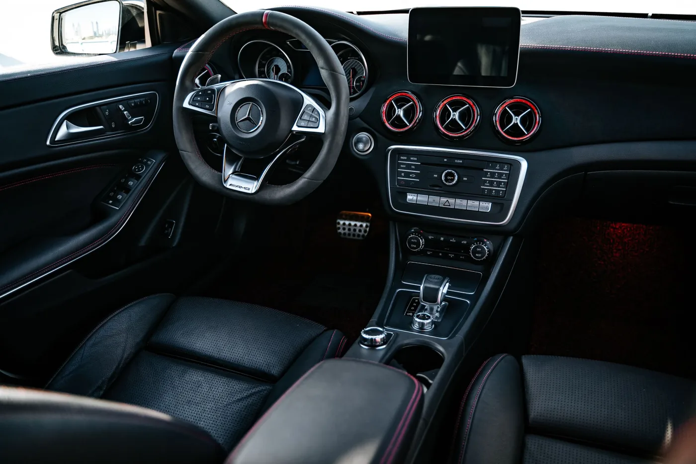
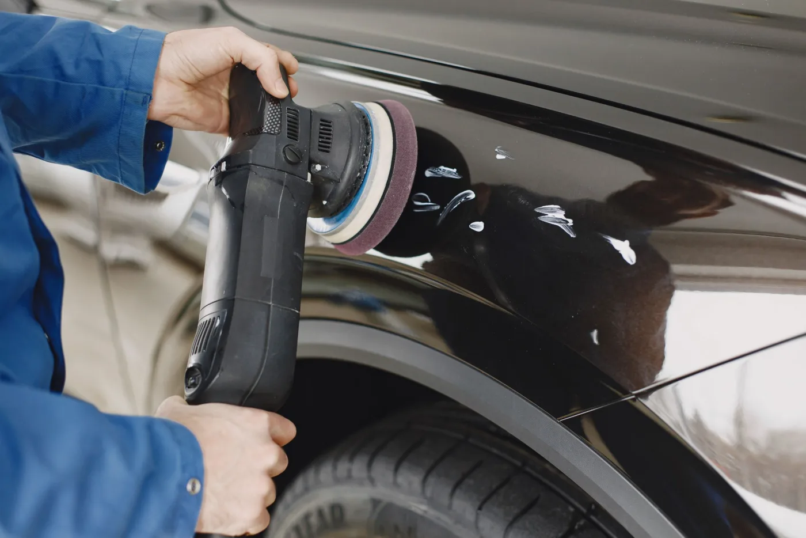

Service context shown with licensed stock photography.
The Mirror Mile
ResetClear the buildup
RefineWork the details
FinishCheck the result
Choose the right starting point
Care for the parts you see—and the places that collect daily life.
Every vehicle arrives with different priorities. Start with the cabin, the exterior, or both, then use the call or booking notes to tell us what stands out.

Cabin / 01
Interior detail
Attention to the seats, floor areas, touchpoints, panels, and the corners that are easy to overlook during a quick clean.
Vacuuming and surface cleaning
Interior glass and touchpoints
Visible detail work around seams and edges

Body / 02
Exterior detail
A careful exterior clean focused on the paint, glass, wheels, trim, and a consistent finish from panel to panel.
Exterior wash and drying
Wheel, tire, glass, and trim attention
Finish inspection in available light

Full vehicle / 03
Interior + exterior
One appointment for drivers who want the cabin and exterior addressed together, with priorities discussed before the work begins.
Combined interior and exterior care
Priority areas noted up front
Walkaround when the detail is complete
A simple route from dirty to dialed-in
Three checkpoints. No mystery.
Good detailing begins with what the vehicle actually needs. The process stays easy to follow from scheduling through the final look.

Mile 01
Set the priorities
Call or book online, identify the vehicle, and share the interior or exterior areas you want addressed.
Mile 02
Work methodically
The detail moves through the agreed areas in a deliberate order so the cabin and exterior receive consistent attention.
Mile 03
Review the finish
Look over the visible results and the priority areas you identified before the appointment wraps.
Observable workmanship
What you can inspect before we wrap.
No invented promises or vague superlatives—just visible areas you can review on your own vehicle after the detail.
01
Glass and sightlines
Look across the windshield, mirrors, and interior glass from more than one angle.
02
Touchpoints and seams
Check the controls, handles, console edges, seat seams, and other frequently handled areas.
03
Panels, wheels, and trim
Walk the vehicle and compare the finish from one panel and wheel to the next.


Look closely. That is the point.
All service photography is licensed stock imagery used to show the type of work—not Mirror Mile staff or completed customer vehicles.
Before you schedule
Straight answers for Houston drivers.
If your vehicle has a specific concern, mention it during the call or in your online booking notes.
How do I get started?
Call 832-358-3048 or book online. Share the vehicle and the areas you want addressed so the appointment starts with clear priorities.
Can I book without calling?
Yes. Use the online appointment link to choose a time. Calling is also available when you would rather talk through the vehicle first.
What areas can a detail include?
Mirror Mile offers interior detailing, exterior detailing, and combined interior and exterior service. The exact priorities should match the condition of your vehicle.
Are these photos Mirror Mile customer vehicles?
No. The launch site uses licensed stock photography to illustrate detailing services and does not present those images as past work.
Your next clean mile starts here
Tell us what your vehicle needs.
Call to talk it through or book an appointment online.